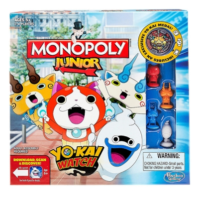
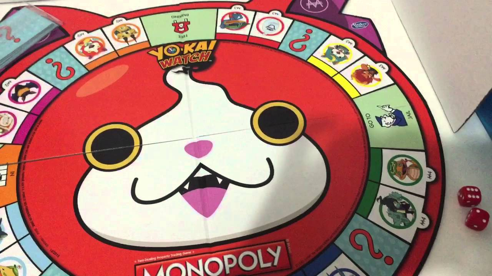

La función básica del juego era servir de herramienta para poder enseñar las teorías acerca de la justicia social y económica extraídas del estudio titulado Progreso y Miseria de Henry George.
 El Monopoly, el juego de mesa más vendido en el mundo, lleva ya 78 años en el mercado, comercializándose por primera vez en 1936. Quizás porque es un juego para disfrutar con toda la familia y amigos y pasar horas y horas de entretenimiento.
En toda su historia, tanto la marca como el packaging del juego, han evolucionado y crecido notablemente, adaptándose a las demandas de sus clientes potenciales, que son muchos en el mundo entero.
Se han producido muchísimos cambios en el diseño de la marca y del packaging en estos 78 años de evolución y crecimiento de la marca Monopoly. Has puesto hincapié en no quedarse atrás y seguir muy presentes en el mercado actual y lo han conseguido con creces. Si siguen así, el Monopoly será un juego presente por siempre.
